6 Examples
6.1 fit_gillnet_dome function
This section demonstrates how to use the fit_gillnet_dome() function to estimate selectivity parameters for gillnet fisheries. The function fits multiple selectivity models to experimental gillnet data and provides comprehensive model comparison capabilities.
The fit_gillnet_dome() function is designed to:
- Fit multiple selectivity curves to gillnet experimental data
- Handle both unimodal and bimodal selectivity patterns
- Provide automatic model comparison and selection
- Generate plots and statistical summaries
- Support both automatic and manual starting value specification
The function expects input data with the following structure:
- Length measurements or frequency data from experimental gillnet fishing
- Multiple mesh sizes tested simultaneously
- Data organized in a format compatible with the package’s data processing functions
Loading the package and data:
# Load the package
library(fishLengthAssess)
# Load the example gillnet data
data("raw_data_gillnet")
input_data <- raw_data_gillnet
input_data## V1 V2 V3 V4 V5 V6 V7 V8 V9
## 1 52.5 52 11 1 1 0 0 0 0
## 2 54.5 102 91 16 4 4 2 0 3
## 3 56.5 295 232 131 61 17 13 3 1
## 4 58.5 309 318 362 243 95 26 4 3
## 5 60.5 118 173 326 342 199 100 10 11
## 6 62.5 79 87 191 239 202 201 39 15
## 7 64.5 27 48 111 143 133 185 72 25
## 8 66.5 14 17 44 51 52 122 74 41
## 9 68.5 8 6 14 23 25 59 65 76
## 10 70.5 7 3 8 14 15 16 34 33
## 11 72.5 0 3 1 2 5 4 6 15# Define the mesh sizes (cm) used in the experiment
mesh_sizes <- c(13.5, 14.0, 14.8, 15.4, 15.9, 16.6, 17.8, 19)6.1.1 Example 1
6.1.1.1 Fitting unimodal models only
In many cases, the user may want to start with simpler unimodal selectivity models before considering more complex bimodal patterns. Setting run_bimodal = FALSE fits only the three basic dome-shaped models (i.e., norm.loc: Normal common spread, norm.sca: Normal scaled spread, and lognorm: Lognormal).
# Fit unimodal selectivity models only
result_unimodal <- fit_gillnet_dome(
input_data = input_data,
mesh_sizes = mesh_sizes,
run_bimodal = FALSE,
output_dir = "model_plots_unimodal",
length_seq = seq(40, 100, 1)
)The function automatically generates plots for each fitted selectivity model and saves them in the specified output directory (e.g., model_plots_unimodal).
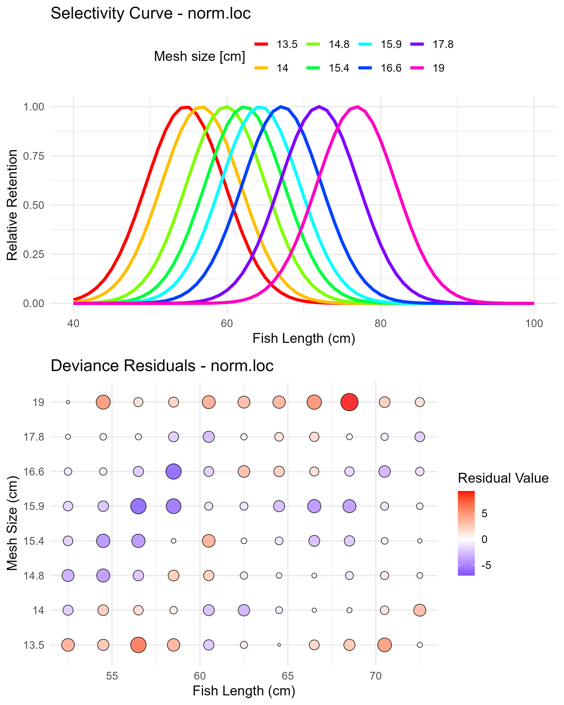
Figure 6.1: Normal location model (norm.loc) selectivity curves and residuals. The top panel shows the selectivity curves for each mesh size, while the bottom panel displays the deviance residuals.
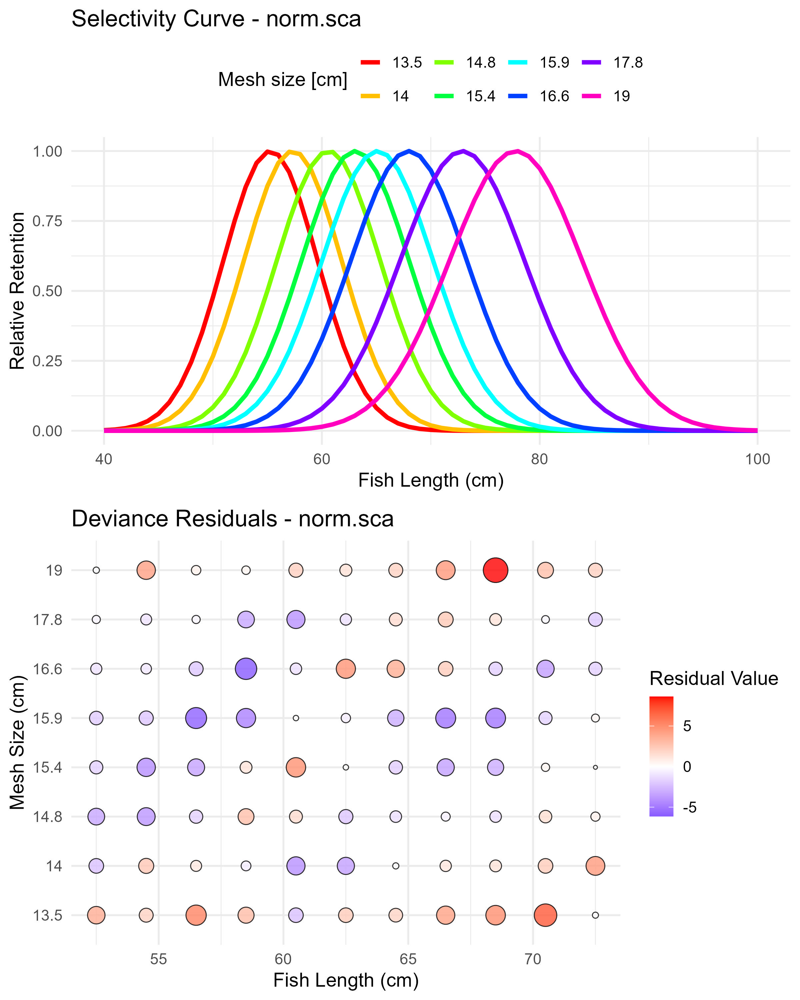
Figure 6.2: Normal scaled spread model (norm.sca) selectivity curves and residuals. The top panel shows the selectivity curves for each mesh size, while the bottom panel displays the deviance residuals.
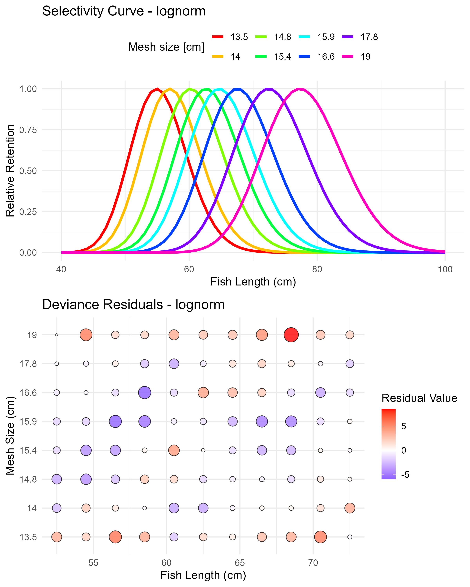
Figure 6.3: Lognormal model (lognorm) selectivity curves and residuals. The top panel shows the selectivity curves for each mesh size, while the bottom panel displays the deviance residuals.
The function returns a comprehensive list object with results for each fitted model. The user can access the objects using the $ symbol, as follows:
## [1] "norm.loc" "norm.sca" "lognorm"## par s.e.
## Mode(mesh1) 54.600084 0.07305819
## Std dev.(mesh1) 5.147949 0.06709739## par s.e.
## Mode(mesh1) 55.282277 0.06986564
## Std dev.(mesh1) 4.343513 0.05268696## par s.e.
## Mode(mesh1) 54.910902 0.07055028
## Std dev.(mesh1) 4.457549 0.05828204Here is an example of how to access the selection ogive (for all mesh sizes) for the norm.loc model.
# Selection ogive matrix (selectivity by length and mesh size)
print("Selection Ogive Matrix (first 10 rows):")## [1] "Selection Ogive Matrix (first 10 rows):"## Length 13.5 14 14.8 15.4 15.9
## [1,] 52.5 0.920157978 0.72570316 0.3600821 0.1642659 0.07207511
## [2,] 54.5 0.999811030 0.91853023 0.5818113 0.3187592 0.16292195
## [3,] 56.5 0.934163686 0.99971780 0.8083741 0.5318972 0.31668203
## [4,] 58.5 0.750546437 0.93564461 0.9658110 0.7632066 0.52931815
## [5,] 60.5 0.518539308 0.75299822 0.9922508 0.9416860 0.76078103
## [6,] 62.5 0.308060013 0.52110652 0.8765976 0.9991245 0.94026896
## [7,] 64.5 0.157376001 0.31010488 0.6659300 0.9115545 0.99929577
## [8,] 66.5 0.069133924 0.15868658 0.4350173 0.7151468 0.91324127
## [9,] 68.5 0.026115205 0.06982667 0.2443621 0.4824556 0.71767289
## [10,] 70.5 0.008482917 0.02642117 0.1180350 0.2798781 0.48497246
## 16.6 17.8 19
## [1,] 0.01755223 0.0007710961 1.392758e-05
## [2,] 0.04912666 0.0031128820 8.109595e-05
## [3,] 0.11823648 0.0108060347 4.060432e-04
## [4,] 0.24470078 0.0322566740 1.748215e-03
## [5,] 0.43548050 0.0827984754 6.472424e-03
## [6,] 0.66642551 0.1827572547 2.060576e-02
## [7,] 0.87696859 0.3468777475 5.641049e-02
## [8,] 0.99235256 0.5661451417 1.327947e-01
## [9,] 0.96560050 0.7945635876 2.688134e-01
## [10,] 0.80793886 0.9589126819 4.679190e-016.1.1.2 Extracting mesh-specific selectivity
The user can extract selectivity curves for specific mesh sizes:
# Extract selectivity for mesh size 17.8 cm (Normal Location model)
mesh_17_8 <- result_unimodal$selectivity_curves$norm.loc[, c("Length", "17.8")]
# Display first 10 rows
print("Selectivity for 17.8 cm mesh (Normal Location model):")## [1] "Selectivity for 17.8 cm mesh (Normal Location model):"## Length 17.8
## 1 40 4.112843e-09
## 2 41 1.349610e-08
## 3 42 4.264683e-08
## 4 43 1.297710e-07
## 5 44 3.802602e-07
## 6 45 1.072992e-06
## 7 46 2.915577e-06
## 8 47 7.628953e-06
## 9 48 1.922285e-05
## 10 49 4.664261e-05
## 11 50 1.089834e-04
## 12 51 2.452169e-04
## 13 52 5.313158e-04
## 14 53 1.108581e-03
## 15 54 2.227381e-03
## 16 55 4.309570e-03
## 17 56 8.029450e-03
## 18 57 1.440622e-02
## 19 58 2.489010e-02
## 20 59 4.141099e-02# Extract selectivity for mesh size 15.9 cm (Normal common spread model)
mesh_15_9 <- result_unimodal$selectivity_curves$norm.sca[, c("Length", "15.9")]
# Display first 10 rows
print("Selectivity for 15.9 cm mesh (Normal common spread model):")## [1] "Selectivity for 15.9 cm mesh (Normal common spread model):"## Length 15.9
## 1 40 5.864747e-06
## 2 41 1.501946e-05
## 3 42 3.702241e-05
## 4 43 8.783750e-05
## 5 44 2.005859e-04
## 6 45 4.408854e-04
## 7 46 9.327306e-04
## 8 47 1.899292e-03
## 9 48 3.722481e-03
## 10 49 7.022280e-03
## 11 50 1.275055e-02
## 12 51 2.228357e-02
## 13 52 3.748398e-02
## 14 53 6.068924e-02
## 15 54 9.457640e-02
## 16 55 1.418597e-01
## 17 56 2.048048e-01
## 18 57 2.845944e-01
## 19 58 3.806429e-01
## 20 59 4.900204e-016.1.1.3 Calculating aggregated selectivity
Use get_composite_curve() to calculate the combined selectivity across all mesh sizes. The following example shows how to get the aggregated selectivity for the Normal Location model (norm.loc).
# Calculate aggregated selectivity curve
aggregated_selectivity <- get_composite_curve(
result_unimodal$results$norm.loc,
length_seq = seq(40, 100, 1)
)
# Display first 10 values
print("Aggregated selectivity curve (first 10 values):")## [1] "Aggregated selectivity curve (first 10 values):"## Length Selectivity
## 1 40 0.005309309
## 2 41 0.009262737
## 3 42 0.015598858
## 4 43 0.025365112
## 5 44 0.039841359
## 6 45 0.060475153
## 7 46 0.088754824
## 8 47 0.126021978
## 9 48 0.173242333
## 10 49 0.2307717136.1.1.4 Plotting mesh-specific and aggregated selectivity curves
Use plot_mesh_curves() to create plots. The following example shows how to plot selectivity for the Normal Location model (norm.loc).
# Plot selectivity curves for each mesh size
plot_mesh_curves(
result_unimodal,
"norm.loc",
length_seq = seq(40, 100, 1),
save_plot = TRUE,
output_dir = "model_plots_unimodal"
)## Plot saved to: model_plots_unimodal/Curves_norm.loc.jpeg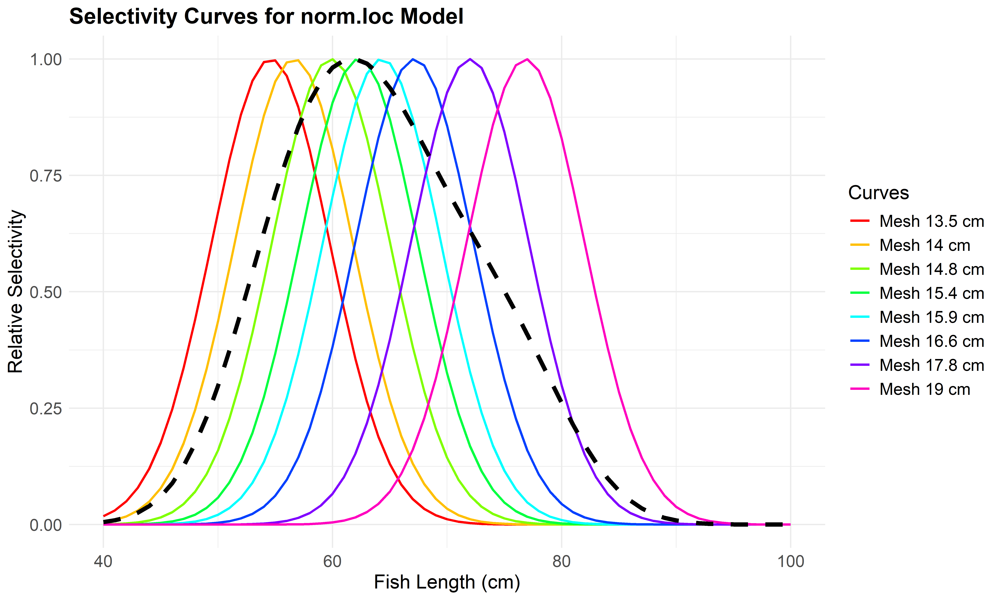
Figure 6.4: Mesh-specific and composite selectivity curves
6.1.1.5 Comparing unimodal models
Use the compare_stats function to generate a comprehensive comparison table. This function allows the user to save a CSV file with the outputs.
# Generate comparison table for unimodal models
comparison_unimodal <- compare_stats(
result_unimodal,
include_bimodal = FALSE,
save_csv = TRUE,
filename = "model_plots_unimodal/unimodal_models_comparison.csv"
)## Table saved to: model_plots_unimodal/unimodal_models_comparison.csv| Model | LogLikelihood | Deviance | Mode1 | StdDev1 |
|---|---|---|---|---|
| lognorm | 25014.23 | 704.28 | 54.91 | 4.46 |
| norm.sca | 24979.99 | 772.76 | 55.28 | 4.34 |
| norm.loc | 24934.91 | 862.92 | 54.60 | 5.15 |
6.1.2 Example 2
6.1.2.1 Fitting all models, including bimodals models
For more complex selectivity patterns, include bimodal models (binorm.sca: Bi-normal model and bilognorm: Bi-lognormal) by setting run_bimodal = TRUE. This fits all five available selectivity models using automatic starting values.
# Fit all selectivity models
result_all_auto <- fit_gillnet_dome(
input_data = input_data,
mesh_sizes = mesh_sizes,
run_bimodal = TRUE,
output_dir = "model_plots_all_auto",
length_seq = seq(40, 100, 1)
)## Warning in sqrt(diag(varpars)): NaNs producedThe function automatically generates plots for each fitted selectivity model and saves them in the specified output directory (e.g., model_plots_all_auto).
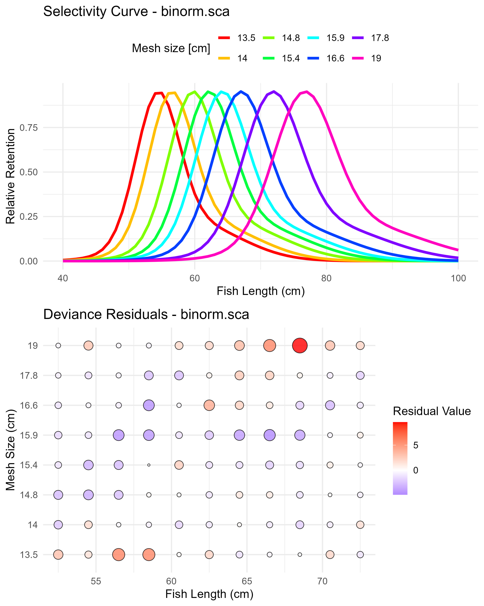
Figure 6.5: Binormal sca (binorm.sca) selectivity curves and residuals. The top panel shows the selectivity curves for each mesh size, while the bottom panel displays the deviance residuals.
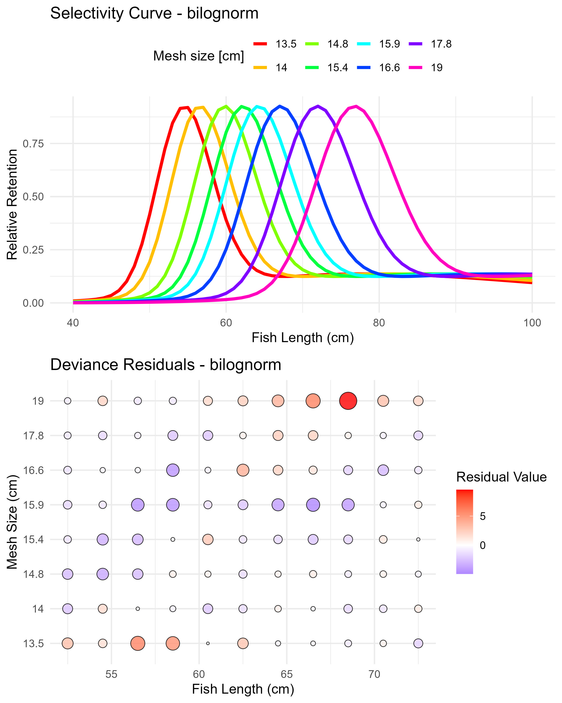
Figure 6.6: Bilognormal model (bilognorm) selectivity curves and residuals. The top panel shows the selectivity curves for each mesh size, while the bottom panel displays the deviance residuals.
The function returns a comprehensive list object with results for each fitted model. The user can access the objects using the $ symbol, as follows:
## [1] "norm.loc" "norm.sca" "lognorm" "binorm.sca" "bilognorm"## par s.e.
## Mode1(mesh1) 54.3225310 0.1316355
## Std dev.1(mesh1) 3.2269064 0.1337843
## Mode2(mesh1) 59.6532976 1.1968464
## Std dev.2(mesh1) 7.2744073 0.7121720
## P(mode1) 0.7901953 0.0407968## par s.e.
## Mode1(mesh1) 54.4858569 0.06528697
## Std dev.1(mesh1) 3.6471542 0.04494561
## Mode2(mesh1) 78.3148120 NaN
## Std dev.2(mesh1) 26.0932316 NaN
## P(mode1) 0.8635046 NaNHere is an example of how to access the selection ogive (for all mesh sizes) for the binorm and bilognorm models.
# Selection ogive matrix (selectivity by length and mesh size)
print("Selection Ogive Matrix (first 10 rows):")## [1] "Selection Ogive Matrix (first 10 rows):"## Length 13.5 14 14.8 15.4 15.9
## [1,] 52.5 0.8030715 0.5069798 0.1649934 0.06517818 0.03273717
## [2,] 54.5 0.9522461 0.8102611 0.3673230 0.15625122 0.07387006
## [3,] 56.5 0.8202936 0.9521900 0.6570273 0.34183870 0.17172061
## [4,] 58.5 0.5490164 0.8308804 0.9002506 0.61520946 0.36125853
## [5,] 60.5 0.3348435 0.5705555 0.9361642 0.86850960 0.62930073
## [6,] 62.5 0.2261985 0.3538089 0.7550065 0.94975497 0.87174299
## [7,] 64.5 0.1735095 0.2376248 0.5057878 0.81518812 0.95021819
## [8,] 66.5 0.1353649 0.1815174 0.3227579 0.57650228 0.82480418
## [9,] 68.5 0.1002017 0.1435352 0.2267997 0.37316321 0.59499761
## [10,] 70.5 0.0690314 0.1090331 0.1775600 0.25469460 0.39112094
## 16.6 17.8 19
## [1,] 0.01506024 0.005128329 0.001870887
## [2,] 0.02925808 0.009044604 0.003350637
## [3,] 0.06283026 0.015989792 0.005806168
## [4,] 0.14166006 0.029851447 0.009853976
## [5,] 0.29908700 0.060872776 0.016856752
## [6,] 0.54017873 0.130029363 0.030381864
## [7,] 0.79690933 0.265043607 0.059216942
## [8,] 0.94445433 0.476509305 0.120588379
## [9,] 0.90174221 0.723154066 0.237610562
## [10,] 0.71058796 0.909214143 0.423048376# Selection ogive matrix (selectivity by length and mesh size)
print("Selection Ogive Matrix (first 10 rows):")## [1] "Selection Ogive Matrix (first 10 rows):"## Length 13.5 14 14.8 15.4 15.9
## [1,] 52.5 0.7906976 0.5115406 0.1625205 0.05905702 0.02911427
## [2,] 54.5 0.9253369 0.7972326 0.3724503 0.15330716 0.06769553
## [3,] 56.5 0.8155435 0.9252546 0.6555444 0.34652595 0.16961054
## [4,] 58.5 0.5687858 0.8246240 0.8782271 0.61595497 0.36629636
## [5,] 60.5 0.3406743 0.5896322 0.9129551 0.84980985 0.62934127
## [6,] 62.5 0.2026631 0.3629373 0.7587812 0.92377141 0.85271088
## [7,] 64.5 0.1430765 0.2177200 0.5260476 0.81115238 0.92411829
## [8,] 66.5 0.1257811 0.1499820 0.3262018 0.59533941 0.81941640
## [9,] 68.5 0.1247992 0.1275632 0.2034513 0.38513118 0.61296306
## [10,] 70.5 0.1281705 0.1243437 0.1464275 0.24024488 0.40528715
## 16.6 17.8 19
## [1,] 0.01589357 0.008682831 0.004965900
## [2,] 0.02627352 0.011811785 0.006879007
## [3,] 0.05675317 0.016517877 0.009286981
## [4,] 0.13794049 0.026750453 0.012384539
## [5,] 0.30266416 0.054843590 0.017104670
## [6,] 0.54387485 0.125714700 0.027179493
## [7,] 0.78508810 0.267416299 0.053236762
## [8,] 0.91785623 0.481620170 0.115817146
## [9,] 0.88453746 0.717323772 0.238822026
## [10,] 0.71934749 0.886234373 0.4285521636.1.2.2 Extracting mesh-specific selectivity
The user can extract selectivity curves for specific mesh sizes:
# Extract selectivity for mesh size 14.8 cm (binorm.sca model)
mesh_14_8 <- result_all_auto$selectivity_curves$binorm.sca[, c("Length", "14.8")]
# Display first 10 rows
print("Selectivity for 14.8 cm mesh (binorm.sca model):")## [1] "Selectivity for 14.8 cm mesh (binorm.sca model):"## Length 14.8
## 1 40 0.001316737
## 2 41 0.001948243
## 3 42 0.002839152
## 4 43 0.004078372
## 5 44 0.005785166
## 6 45 0.008132920
## 7 46 0.011405358
## 8 47 0.016117339
## 9 48 0.023241646
## 10 49 0.034567393
## 11 50 0.053143061
## 12 51 0.083607577
## 13 52 0.132023919
## 14 53 0.204739313
## 15 54 0.306011971
## 16 55 0.434788177
## 17 56 0.581896770
## 18 57 0.729476686
## 19 58 0.854002175
## 20 59 0.932657127# Extract selectivity for mesh size 16.6 cm (bilognorm model)
mesh_16_6 <- result_all_auto$selectivity_curves$bilognorm[, c("Length", "16.6")]
# Display first 10 rows
print("Selectivity for 16.6 cm mesh (bilognorm model):")## [1] "Selectivity for 16.6 cm mesh (bilognorm model):"## Length 16.6
## 1 40 0.001305255
## 2 41 0.001688938
## 3 42 0.002156548
## 4 43 0.002719410
## 5 44 0.003389041
## 6 45 0.004176944
## 7 46 0.005094418
## 8 47 0.006152537
## 9 48 0.007362833
## 10 49 0.008740446
## 11 50 0.010314660
## 12 51 0.012158045
## 13 52 0.014454991
## 14 53 0.017638553
## 15 54 0.022619119
## 16 55 0.031092032
## 17 56 0.045834557
## 18 57 0.070805346
## 19 58 0.110802443
## 20 59 0.1704989916.1.2.3 Calculating aggregated selectivity
Use get_composite_curve() to calculate the combined selectivity across all mesh sizes. The following example shows how to get the aggregated selectivity for the Bi-normal model (binorm.sca).
# Calculate aggregated selectivity curve
aggregated_selectivity <- get_composite_curve(
result_all_auto$results$binorm.sca,
length_seq = seq(40, 100, 1)
)
# Display first 10 values
print("Aggregated selectivity curve (first 10 values):")## [1] "Aggregated selectivity curve (first 10 values):"## Length Selectivity
## 1 40 0.002939409
## 2 41 0.004303078
## 3 42 0.006245301
## 4 43 0.009058137
## 5 44 0.013276489
## 6 45 0.019892823
## 7 46 0.030652673
## 8 47 0.048325650
## 9 48 0.076714490
## 10 49 0.1200940886.1.2.4 Plotting mesh-specific and aggregated selectivity curves
Use plot_mesh_curves() to create plots. The following example shows how to plot selectivity for the Bi-normal model (binorm.sca).
# Plot selectivity curves for each mesh size
plot_mesh_curves(
result_all_auto,
"binorm.sca",
length_seq = seq(40, 100, 1),
save_plot = TRUE,
output_dir = "model_plots_all_auto"
)## Plot saved to: model_plots_all_auto/Curves_binorm.sca.jpeg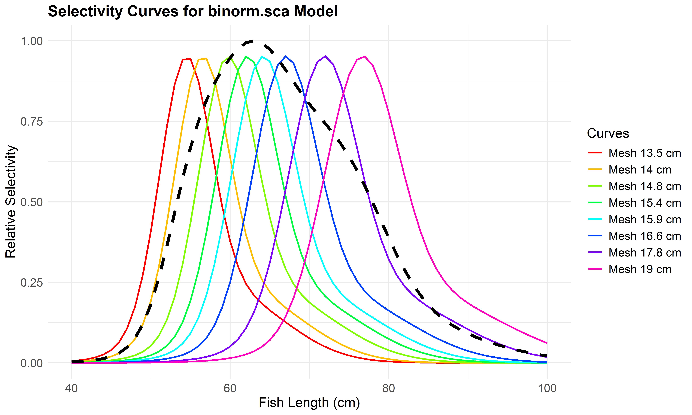
Figure 6.7: Mesh-specific and composite selectivity curves
6.1.2.5 Comparing all models
Use the compare_stats function to generate a comprehensive comparison table. This function allows the user to save a CSV file with the outputs.
# Generate comparison table for unimodal models
comparison_all_auto <- compare_stats(
result_all_auto,
include_bimodal = TRUE,
save_csv = TRUE,
filename = "model_plots_all_auto/all_models_comparison.csv"
)## Table saved to: model_plots_all_auto/all_models_comparison.csv| Model | Log Likelihood | Deviance | Mode1 cm | StdDev1 cm | Mode2 cm | StdDev2 cm | P_Mode1 |
|---|---|---|---|---|---|---|---|
| bilognorm | 25093.30 | 546.13 | 54.49 | 3.65 | 78.31 | 26.09 | 0.86 |
| binorm.sca | 25091.39 | 549.96 | 54.32 | 3.23 | 59.65 | 7.27 | 0.79 |
| lognorm | 25014.23 | 704.28 | 54.91 | 4.46 | NA | NA | NA |
| norm.sca | 24979.99 | 772.76 | 55.28 | 4.34 | NA | NA | NA |
| norm.loc | 24934.91 | 862.92 | 54.60 | 5.15 | NA | NA | NA |
6.1.3 Example 3
6.1.3.1 Fitting all models, including bimodals with manual starting values
For better control over the optimization process, especially with bimodal models (binorm.sca``: Bi-normal model andbilognorm`: Bi-lognormal), the user can specify manual starting values:
# Define manual starting values for bimodal models
manual_starts <- list(
binorm.sca = c(55, 4, 65, 4, 3), # Mode1, SD1, Mode2, SD2, logit(P1)
bilognorm = c(4, 0.2, 4.2, 0.1, 2) # log(mu1), log(sigma1), log(mu2), log(sigma2), logit(P1)
)
# Fit models with manual starting values
result_all_manual <- fit_gillnet_dome(
input_data = input_data,
mesh_sizes = mesh_sizes,
manual_x0_list = manual_starts,
run_bimodal = TRUE,
output_dir = "model_plots_all_manual",
length_seq = seq(40, 100, 1)
)The function automatically generates plots for each fitted selectivity model and saves them in the specified output directory (e.g., model_plots_all_manual).
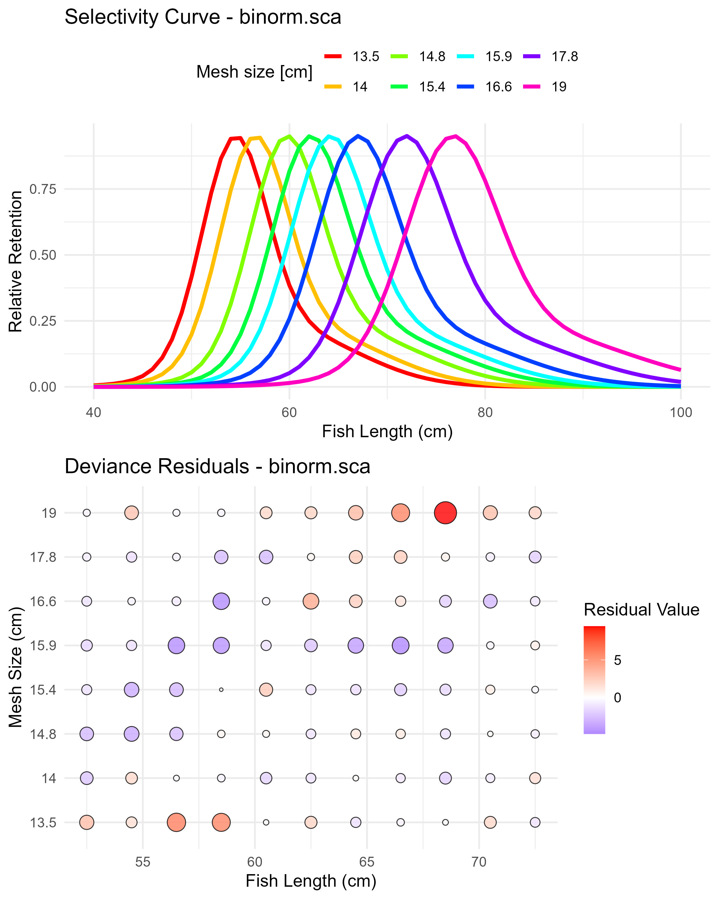
Figure 6.8: Binormal sca (binorm.sca) selectivity curves and residuals. The top panel shows the selectivity curves for each mesh size, while the bottom panel displays the deviance residuals.
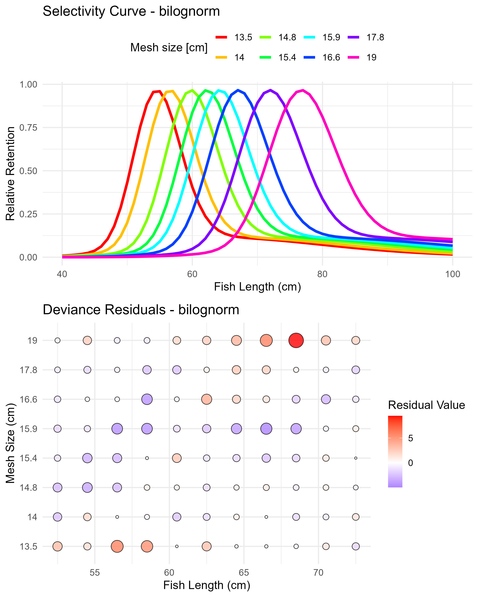
Figure 6.9: Bilognormal model (bilognorm) selectivity curves and residuals. The top panel shows the selectivity curves for each mesh size, while the bottom panel displays the deviance residuals.
The function returns a comprehensive list object with results for each fitted model. The user can access the objects using the $ symbol, as follows:
## [1] "norm.loc" "norm.sca" "lognorm" "binorm.sca" "bilognorm"## par s.e.
## Mode1(mesh1) 54.3235714 0.13798557
## Std dev.1(mesh1) 3.2780203 0.13355660
## Mode2(mesh1) 59.8074724 1.32748734
## Std dev.2(mesh1) 7.3256977 0.79623248
## P(mode1) 0.7923451 0.04245935## par s.e.
## Mode1(mesh1) 54.4756989 0.08838970
## Std dev.1(mesh1) 3.6144047 0.10520153
## Mode2(mesh1) 65.4477215 4.85438585
## Std dev.2(mesh1) 15.2583192 4.46442782
## P(mode1) 0.8885962 0.01697675Here is an example of how to access the selection ogive (for all mesh sizes) for the binorm and bilognorm models (models fitted using manual starting values).
# Selection ogive matrix (selectivity by length and mesh size)
print("Selection Ogive Matrix (first 10 rows):")## [1] "Selection Ogive Matrix (first 10 rows):"## Length 13.5 14 14.8 15.4 15.9
## [1,] 52.5 0.80501771 0.5139128 0.1706424 0.06745457 0.03342761
## [2,] 54.5 0.95091906 0.8120463 0.3750070 0.16168890 0.07653556
## [3,] 56.5 0.82314310 0.9508570 0.6618921 0.34950372 0.17752318
## [4,] 58.5 0.55628162 0.8334593 0.8999424 0.62075937 0.36894296
## [5,] 60.5 0.34100575 0.5776670 0.9355857 0.86894954 0.63462837
## [6,] 62.5 0.22940270 0.3603052 0.7593693 0.94862310 0.87210677
## [7,] 64.5 0.17553847 0.2411976 0.5132374 0.81816555 0.94906242
## [8,] 66.5 0.13760668 0.1836167 0.3286779 0.58356448 0.82753924
## [9,] 68.5 0.10277695 0.1456849 0.2300231 0.37994454 0.60188804
## [10,] 70.5 0.07157392 0.1115508 0.1796182 0.25881336 0.39811903
## 16.6 17.8 19
## [1,] 0.01503676 0.005061236 0.001854765
## [2,] 0.02978049 0.008948484 0.003310710
## [3,] 0.06499816 0.015989289 0.005730395
## [4,] 0.14671383 0.030402075 0.009759185
## [5,] 0.30658976 0.062949174 0.016880027
## [6,] 0.54675243 0.134747375 0.030957894
## [7,] 0.79899252 0.272286992 0.061215201
## [8,] 0.94317675 0.483716104 0.125013155
## [9,] 0.90231195 0.726789403 0.244550345
## [10,] 0.71582689 0.908696457 0.430594111# Selection ogive matrix (selectivity by length and mesh size)
print("Selection Ogive Matrix (first 10 rows):")## [1] "Selection Ogive Matrix (first 10 rows):"## Length 13.5 14 14.8 15.4 15.9
## [1,] 52.5 0.8250696 0.5327307 0.1696513 0.06261988 0.03118562
## [2,] 54.5 0.9661127 0.8319239 0.3876150 0.16011951 0.07158238
## [3,] 56.5 0.8503227 0.9660310 0.6833954 0.36062239 0.17698821
## [4,] 58.5 0.5918750 0.8598659 0.9168711 0.64193936 0.38120570
## [5,] 60.5 0.3540786 0.6136509 0.9529089 0.88707225 0.65595410
## [6,] 62.5 0.2095821 0.3772698 0.7907281 0.96438700 0.89011485
## [7,] 64.5 0.1442487 0.2255093 0.5472609 0.84570893 0.96475853
## [8,] 66.5 0.1201446 0.1522825 0.3389986 0.61961430 0.85439259
## [9,] 68.5 0.1110202 0.1235701 0.2104182 0.40038574 0.63803374
## [10,] 70.5 0.1053521 0.1127812 0.1481840 0.24920348 0.42137967
## 16.6 17.8 19
## [1,] 0.01642821 0.007717878 0.003650354
## [2,] 0.02811931 0.011482361 0.005666578
## [3,] 0.06022595 0.017166514 0.008429273
## [4,] 0.14422724 0.028636484 0.012183348
## [5,] 0.31499839 0.058240207 0.017855118
## [6,] 0.56652779 0.131587321 0.029100847
## [7,] 0.81918618 0.278378292 0.056568090
## [8,] 0.95835970 0.501475932 0.121356278
## [9,] 0.92291611 0.748131310 0.248701381
## [10,] 0.74938107 0.925264231 0.4460907286.1.3.2 Extracting Mesh-Specific Selectivity
The user can extract selectivity curves for specific mesh sizes:
# Extract selectivity for mesh size 14.8 cm (binorm.sca model)
mesh_14_8 <- result_all_manual$selectivity_curves$binorm.sca[, c("Length", "14.8")]
# Display first 10 rows
print("Selectivity for 14.8cm mesh (binorm.sca model):")## [1] "Selectivity for 14.8cm mesh (binorm.sca model):"## Length 14.8
## 1 40 0.001308562
## 2 41 0.001930941
## 3 42 0.002807605
## 4 43 0.004026767
## 5 44 0.005709644
## 6 45 0.008038522
## 7 46 0.011320713
## 8 47 0.016120196
## 9 48 0.023494027
## 10 49 0.035348129# Extract selectivity for mesh size 16.6 cm (bilognorm model)
mesh_16_6 <- result_all_manual$selectivity_curves$bilognorm[, c("Length", "16.6")]
# Display first 10 rows
print("Selectivity for 16.6cm mesh (bilognorm model):")## [1] "Selectivity for 16.6cm mesh (bilognorm model):"## Length 16.6
## 1 40 0.0005640103
## 2 41 0.0008139377
## 3 42 0.0011495654
## 4 43 0.0015910494
## 5 44 0.0021605543
## 6 45 0.0028817911
## 7 46 0.0037794337
## 8 47 0.0048785497
## 9 48 0.0062045436
## 10 49 0.00778526776.1.3.3 Calculating aggregated selectivity
The user can use get_composite_curve() to calculate the combined selectivity across all mesh sizes. The following example shows how to get the aggregated selectivity for the Bi-lognormal model (bilognorm).
# Calculate aggregated selectivity curve
aggregated_selectivity <- get_composite_curve(
result_all_manual$results$bilognorm,
length_seq = seq(40, 100, 1)
)
# Display first 10 values
print("Aggregated selectivity curve (first 10 values):")## [1] "Aggregated selectivity curve (first 10 values):"## Length Selectivity
## 1 40 0.005010173
## 2 41 0.006677579
## 3 42 0.008788167
## 4 43 0.011541483
## 5 44 0.015408243
## 6 45 0.021423536
## 7 46 0.031563602
## 8 47 0.049008538
## 9 48 0.077958682
## 10 49 0.1227309876.1.3.4 Plotting mesh-specific and aggregated selectivity curves
Use plot_mesh_curves() to create plots. The following example shows how to plot selectivity for the Bi-normal model (binorm.sca).
# Plot selectivity curves for each mesh size
plot_mesh_curves(
result_all_manual,
"binorm.sca",
length_seq = seq(40, 100, 1),
save_plot = TRUE,
output_dir = "model_plots_all_manual"
)## Plot saved to: model_plots_all_manual/Curves_binorm.sca.jpegFigure 6.10: Mesh-specific selectivity curves
6.1.3.5 Comparing all models
As before, the user can use compare_stats() function to generate a comprehensive comparison table. This function allows the user to save a CSV file with the outputs.
# Generate comparison table for unimodal models
comparison_all_manual <- compare_stats(
result_all_manual,
include_bimodal = TRUE,
save_csv = TRUE,
filename = "model_plots_all_manual/all_models_comparison.csv"
)## Table saved to: model_plots_all_manual/all_models_comparison.csv| Model | Log Likelihood | Deviance | Mode1 cm | StdDev1 cm | Mode2 cm | StdDev2 cm | P_Mode1 |
|---|---|---|---|---|---|---|---|
| bilognorm | 25093.60 | 545.54 | 54.48 | 3.61 | 65.45 | 15.26 | 0.89 |
| binorm.sca | 25091.12 | 550.49 | 54.32 | 3.28 | 59.81 | 7.33 | 0.79 |
| lognorm | 25014.23 | 704.28 | 54.91 | 4.46 | NA | NA | NA |
| norm.sca | 24979.99 | 772.76 | 55.28 | 4.34 | NA | NA | NA |
| norm.loc | 24934.91 | 862.92 | 54.60 | 5.15 | NA | NA | NA |
6.2 GTG dome-shaped LBSPR assessment
6.2.1 Practical Application of GTG Length-Based SPR model including dome-shaped selectivity: Step-by-Step Example
This section demonstrates how to estimate fishing mortality (F/M) and spawning
potential ratio (SPR) from catch-at-length data using the GTG dome-shaped
length-based SPR model. The selectivity curve is treated as a fixed known
input — only F/M is estimated. The selectivity parameters are obtained from
fit_gillnet_dome() (see section 5.4) or defined directly
by the user.
The example code presented here was adapted from the original implementation (https://github.com/KHommik/DomeShaped_GTG_LBSPR) by Hommik et al. (2020), with modifications to accommodate additional selectivity models and updated simulation routines.
Four examples are provided covering two data formats and two sampling designs:
| Example | Data type | Groups |
|---|---|---|
| A | Frequency | 5 groups |
| B | Length | 5 groups |
| C | Frequency | 1 group |
| D | Length | 1 group |
Four example datasets are included in the package to demonstrate the workflow.
Since the data are simulated with known parameters (Linf = 120 cm, K = 0.2,
M/K = 1.5, L50 = 60 cm, FM = 1.0, Normal.sca selectivity with
SL1 = 55.28 and SL2 = 4.343513^2), the user can verify that the estimated
F/M and SPR values are close to the true values used in the simulation.
| Dataset | Data type | Groups |
|---|---|---|
gtg_catch_frequency |
Frequency | 5 |
gtg_catch_lengths |
Length | 5 |
gtg_catch_frequency_1group |
Frequency | 1 |
gtg_catch_lengths_1group |
Length | 1 |
6.2.1.1 Step 1. Load packages and define common inputs
The life history parameters, length bins, and fleet parameters are the same across all four examples. Define them once here.
Load the required packages and data:
library(fishSimGTG)
library(fishLengthAssess)
library(ggplot2)
# --- Life history parameters ---
LifeHistoryObj <- new("LifeHistory")
LifeHistoryObj@title <- "Fish Stock"
LifeHistoryObj@speciesName <- "Generic Fish"
LifeHistoryObj@L_type <- "TL"
LifeHistoryObj@L_units <- "cm"
LifeHistoryObj@Walpha_units <- "g"
LifeHistoryObj@Linf <- 120 # asymptotic length (cm)
LifeHistoryObj@K <- 0.2 # growth rate
LifeHistoryObj@t0 <- 0 # theoretical age at length zero
LifeHistoryObj@L50 <- 60 # length at 50% maturity (cm)
LifeHistoryObj@L95delta <- 2 # L95 = L50 + L95delta = 62 cm
LifeHistoryObj@MK <- 1.5 # M/K ratio
LifeHistoryObj@M <- LifeHistoryObj@MK * LifeHistoryObj@K
LifeHistoryObj@LW_A <- 0.01 # weight = LW_A x Length ^ LW_B
LifeHistoryObj@LW_B <- 3
LifeHistoryObj@R0 <- 1E6 # unfished recruitment (does not affect SPR)
# --- Length bins ---
# make_size_bins() automatically builds the correct length range from Linf.
# Change Linc to adjust bin width (default = 1 cm).
SizeBins <- make_size_bins(LifeHistoryObj, Linc = 1)
# --- Fleet parameters: dome-shaped selectivity (fixed) ---
# The selectivity parameters below come from fitting the Normal.sca model
# to the example gillnet data using fit_gillnet_dome() (see Example 1).
# For your own data, replace SL1, SL2, SLmesh, and fishery_mesh with
# the values from your own selectivity analysis.
#
# IMPORTANT: SL2 must be SQUARED when using Normal.sca.
# select_Millar() returns k2 as a spread coefficient, but
# GTGDomeLBSPRSim2() expects k2 as a variance coefficient (k2 squared).
FleetPars <- NULL
FleetPars$selectivityCurve <- "Normal.sca"
FleetPars$SL1 <- 55.28 # modal length parameter
FleetPars$SL2 <- 4.343513^2 # spread parameter (SQUARED)
FleetPars$SLmesh <- 13.5 # reference mesh size (cm)
FleetPars$SLMin <- NA # no minimum landing length
FleetPars$use_aggregated <- FALSE # use mesh-specific selectivity
FleetPars$fishery_mesh <- 15.9 # mesh size used in the fishery
FleetPars$FM <- 1 # starting value for optimization
# ---- Option 2: Normal location (norm.loc) ----
# Use when norm.loc had the lowest deviance in fit_gillnet_dome()
# FleetPars$selectivityCurve <- "Normal.loc"
# FleetPars$SL1 <- 54.6 # k
# FleetPars$SL2 <- 5.14 # sigma (no transformation needed)
# FleetPars$SLmesh <- 13.5
# FleetPars$SLMin <- NA
# FleetPars$use_aggregated <- FALSE
# FleetPars$fishery_mesh <- 15.9
# FleetPars$FM <- 1
# ---- Option 3: Lognormal (lognorm) ----
# Use when lognorm had the lowest deviance in fit_gillnet_dome()
# FleetPars$selectivityCurve <- "logNorm"
# FleetPars$SL1 <- 4.01 # mu (no transformation needed)
# FleetPars$SL2 <- 0.080 # sigma (no transformation needed)
# FleetPars$SLmesh <- 13.5
# FleetPars$SLMin <- NA
# FleetPars$use_aggregated <- FALSE
# FleetPars$fishery_mesh <- 15.9
# FleetPars$FM <- 1
cat("Selected selectivity curve:", FleetPars$selectivityCurve, "\n")## Selected selectivity curve: Normal.sca# The true SPR is calculated by running the simulation with the known parameters
# (FM = 1.0). Since the data were simulated with these exact parameters, comparing the estimated SPR and F/M to these true values tells us how well the model recovers the input parameters. Small differences are expected due to multinomial sampling.
simGTG <- GTGDomeLBSPRSim2(LifeHistoryObj, FleetPars, SizeBins)
true_SPR <- simGTG$SPR
cat("True SPR:", round(true_SPR, 4), "\n")## True SPR: 0.7258## True F/M: 1.0006.2.1.2 Step 2. Create the lengthComp object
The LengthComp object is the standard container for catch-at-length data.
The only slot that changes between examples is dataType — set it to
"Frequency" for frequency data or "Length" for individual measurements.
The observationGroup slot should always be set to "Catch".
# This is shown for illustration — each example below creates its own
# lengthComp object after loading its specific dataset.
lengthComp <- new("LengthComp")
lengthComp@dataType <- "Frequency" # "Frequency" or "Length"
lengthComp@L_source <- "FD" # "FD" = fishery dependent
lengthComp@L_units <- "cm"
lengthComp@L_type <- "TL" # TL = total length
lengthComp@header <- TRUE
lengthComp@observationGroup <- "Catch"6.2.2 Example A: Frequency data — 5 groups
Five catch samples in frequency format, representing for example 5 years of monitoring data.
output_dir <- "example_A_freq_5groups"
# Load data
data("gtg_catch_frequency")
sampleCatch <- gtg_catch_frequency
print(head(sampleCatch))## Length Catch_1 Catch_2 Catch_3 Catch_4 Catch_5
## 1 0.5 0 0 0 0 0
## 2 1.5 0 0 0 0 0
## 3 2.5 0 0 0 0 0
## 4 3.5 0 0 0 0 0
## 5 4.5 0 0 0 0 0
## 6 5.5 0 0 0 0 0results_all <- run_grouped_and_pooled(
lifeHistoryObj = LifeHistoryObj,
fixedFleetPars = FleetPars,
LengthCompObj = lengthComp,
SizeBins = SizeBins,
Lc = 0
)##
## ===== POOLED RESULTS =====## F/M SPR
## 0.9108875 0.7466037##
## Standard error of F/M:## F/M
## 0.2021384##
## Convergence (0 = success): 0##
## ===== PER-GROUP RESULTS =====## F/M SPR
## 0.9072256 0.7474713## F/M SPR
## 0.7960449 0.7743379## F/M SPR
## 0.7960438 0.7743382## F/M SPR
## 0.7043215 0.7972885## F/M SPR
## 1.3564303 0.6487556##
## ===== SIMULATION-ESTIMATION CHECK =====## True SPR: 0.7258## Estimated SPR: 0.7466## True F/M: 1.000## Estimated F/M: 0.9109## Plot saved to: example_A_freq_5groups/fit_pooled.jpeg
Figure 6.11: Example A — Observed vs predicted catch length distribution (pooled)
## Plot saved to: example_A_freq_5groups/fit_by_group.jpeg
Figure 6.12: Example A — Observed vs predicted catch length distribution by group
# Sensitivity analysis: test multiple M/K and Linf combinations
MKseq <- c(1.0, 1.5, 2.0)
Linfseq <- c(110, 120, 130)
cat("\n===== SENSITIVITY ANALYSIS =====\n")##
## ===== SENSITIVITY ANALYSIS =====## M/K Linf (cm) F/M SPRsens_results <- data.frame()
for (iLinf in seq_along(Linfseq)) {
for (iMK in seq_along(MKseq)) {
lh_temp <- LifeHistoryObj
lh_temp@Linf <- Linfseq[iLinf]
lh_temp@MK <- MKseq[iMK]
lh_temp@M <- MKseq[iMK] * lh_temp@K
runOpt <- DoOptDome.aggregated(lh_temp, FleetPars, lengthComp,
SizeBins, Lc = 0, mod = "GTG")
cat(sprintf("%-8.1f %-10.0f %-8.3f %-8.3f\n",
MKseq[iMK], Linfseq[iLinf],
runOpt$lbPars["F/M"], runOpt$lbPars["SPR"]))
sens_results <- rbind(sens_results, data.frame(
Linf = Linfseq[iLinf],
MK = MKseq[iMK],
FM = round(as.numeric(runOpt$lbPars["F/M"]), 3),
SPR = round(as.numeric(runOpt$lbPars["SPR"]), 3)
))
}
}## 1.0 110 1.631 0.649
## 1.5 110 0.651 0.780
## 2.0 110 0.162 0.924
## 1.0 120 2.022 0.641
## 1.5 120 0.911 0.747
## 2.0 120 0.356 0.863
## 1.0 130 2.410 0.633
## 1.5 130 1.169 0.723
## 2.0 130 0.548 0.821write.csv(sens_results, file.path(output_dir, "sensitivity_results.csv"), row.names = FALSE)
knitr::kable(sens_results, caption = "Sensitivity analysis — Example A")| Linf | MK | FM | SPR |
|---|---|---|---|
| 110 | 1.0 | 1.631 | 0.649 |
| 110 | 1.5 | 0.651 | 0.780 |
| 110 | 2.0 | 0.162 | 0.924 |
| 120 | 1.0 | 2.022 | 0.641 |
| 120 | 1.5 | 0.911 | 0.747 |
| 120 | 2.0 | 0.356 | 0.863 |
| 130 | 1.0 | 2.410 | 0.633 |
| 130 | 1.5 | 1.169 | 0.723 |
| 130 | 2.0 | 0.548 | 0.821 |
6.2.3 Example B: Length data — 5 groups
The same analysis repeated using individual fish length measurements. The only
change from Example A is dataType = "Length" — all other code is identical.
output_dir <- "example_B_length_5groups"
# Load data
data("gtg_catch_lengths")
sampleCatch <- gtg_catch_lengths
print(head(sampleCatch))## Catch_1 Catch_2 Catch_3 Catch_4 Catch_5
## 1 49.5 49.5 50.5 51.5 50.5
## 2 51.5 50.5 51.5 51.5 50.5
## 3 52.5 50.5 51.5 51.5 51.5
## 4 52.5 51.5 52.5 51.5 51.5
## 5 52.5 51.5 52.5 51.5 52.5
## 6 52.5 51.5 52.5 51.5 52.5results_all <- run_grouped_and_pooled(
lifeHistoryObj = LifeHistoryObj,
fixedFleetPars = FleetPars,
LengthCompObj = lengthComp,
SizeBins = SizeBins,
Lc = 0
)##
## ===== POOLED RESULTS =====## F/M SPR
## 0.9108875 0.7466037##
## Convergence (0 = success): 0##
## ===== PER-GROUP RESULTS =====## F/M SPR
## 0.9072256 0.7474713## F/M SPR
## 0.7960449 0.7743379## F/M SPR
## 0.7960438 0.7743382## F/M SPR
## 0.7043215 0.7972885## F/M SPR
## 1.3564303 0.6487556##
## ===== SIMULATION-ESTIMATION CHECK =====## True SPR: 0.7258## Estimated SPR: 0.7466## True F/M: 1.000## Estimated F/M: 0.9109## Plot saved to: example_B_length_5groups/fit_pooled.jpeg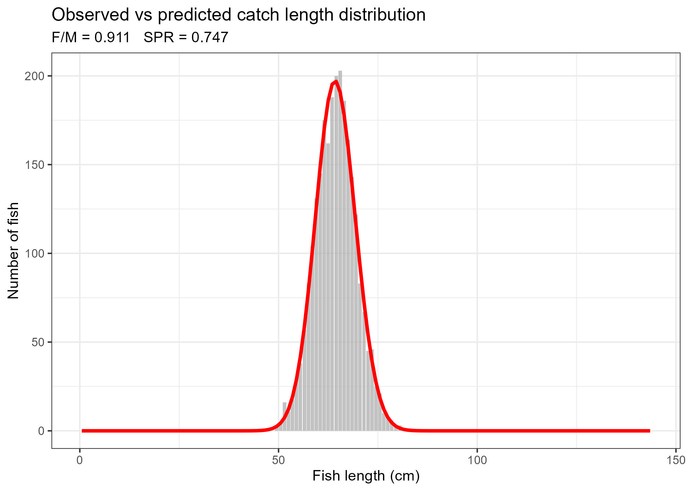
Figure 6.13: Example B — Observed vs predicted catch length distribution (pooled)
## Plot saved to: example_B_length_5groups/fit_by_group.jpeg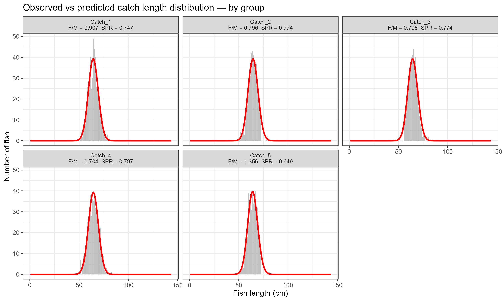
Figure 6.14: Example B — Observed vs predicted catch length distribution by group
##
## ===== SENSITIVITY ANALYSIS =====## M/K Linf (cm) F/M SPRsens_results <- data.frame()
for (iLinf in seq_along(Linfseq)) {
for (iMK in seq_along(MKseq)) {
lh_temp <- LifeHistoryObj
lh_temp@Linf <- Linfseq[iLinf]
lh_temp@MK <- MKseq[iMK]
lh_temp@M <- MKseq[iMK] * lh_temp@K
runOpt <- DoOptDome.aggregated(lh_temp, FleetPars, lengthComp,
SizeBins, Lc = 0, mod = "GTG")
cat(sprintf("%-8.1f %-10.0f %-8.3f %-8.3f\n",
MKseq[iMK], Linfseq[iLinf],
runOpt$lbPars["F/M"], runOpt$lbPars["SPR"]))
sens_results <- rbind(sens_results, data.frame(
Linf = Linfseq[iLinf],
MK = MKseq[iMK],
FM = round(as.numeric(runOpt$lbPars["F/M"]), 3),
SPR = round(as.numeric(runOpt$lbPars["SPR"]), 3)
))
}
}## 1.0 110 1.631 0.649
## 1.5 110 0.651 0.780
## 2.0 110 0.162 0.924
## 1.0 120 2.022 0.641
## 1.5 120 0.911 0.747
## 2.0 120 0.356 0.863
## 1.0 130 2.410 0.633
## 1.5 130 1.169 0.723
## 2.0 130 0.548 0.821write.csv(sens_results, file.path(output_dir, "sensitivity_results.csv"), row.names = FALSE)
knitr::kable(sens_results, caption = "Sensitivity analysis — Example B")| Linf | MK | FM | SPR |
|---|---|---|---|
| 110 | 1.0 | 1.631 | 0.649 |
| 110 | 1.5 | 0.651 | 0.780 |
| 110 | 2.0 | 0.162 | 0.924 |
| 120 | 1.0 | 2.022 | 0.641 |
| 120 | 1.5 | 0.911 | 0.747 |
| 120 | 2.0 | 0.356 | 0.863 |
| 130 | 1.0 | 2.410 | 0.633 |
| 130 | 1.5 | 1.169 | 0.723 |
| 130 | 2.0 | 0.548 | 0.821 |
6.2.4 Example C: Frequency data — single group
When only a single catch sample is available, the workflow is identical — the by-group plot is automatically skipped with an informative message.
output_dir <- "example_C_freq_1group"
# Load data
data("gtg_catch_frequency_1group")
sampleCatch <- gtg_catch_frequency_1group
print(head(sampleCatch))## Length Catch_1
## 1 0.5 0
## 2 1.5 0
## 3 2.5 0
## 4 3.5 0
## 5 4.5 0
## 6 5.5 0results_all <- run_grouped_and_pooled(
lifeHistoryObj = LifeHistoryObj,
fixedFleetPars = FleetPars,
LengthCompObj = lengthComp,
SizeBins = SizeBins,
Lc = 0
)##
## ===== RESULTS =====## F/M SPR
## 0.9072256 0.7474713##
## Standard error of F/M:## F/M
## 0.4529094##
## Convergence (0 = success): 0##
## ===== SIMULATION-ESTIMATION CHECK =====## True SPR: 0.7258## Estimated SPR: 0.7475## True F/M: 1.000## Estimated F/M: 0.9072## Plot saved to: example_C_freq_1group/fit_pooled.jpeg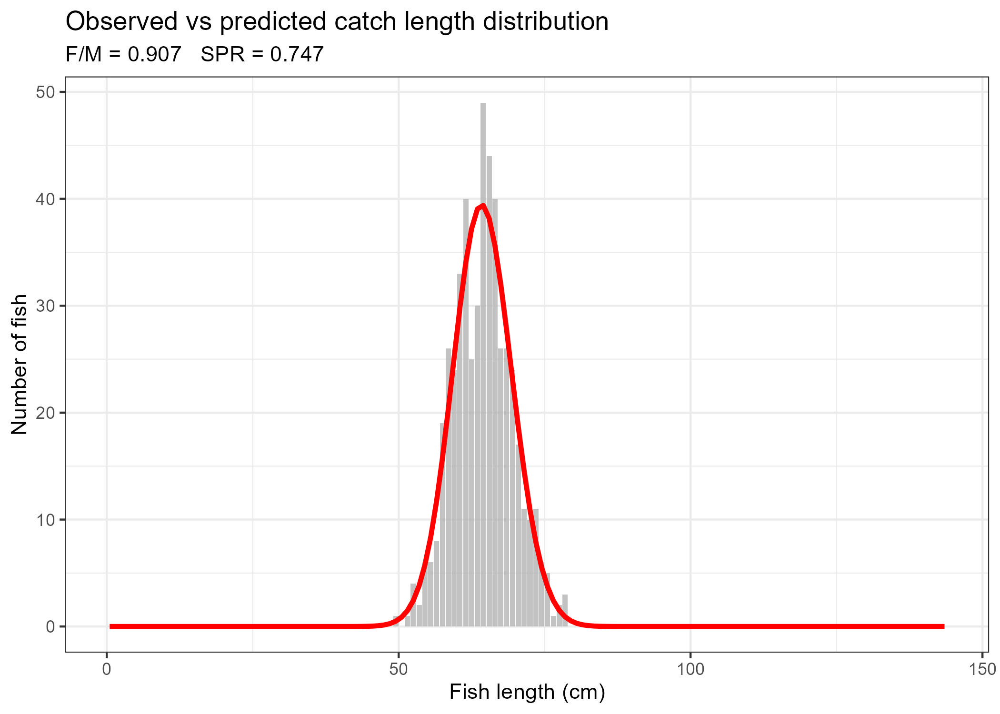
Figure 6.15: Example C — Observed vs predicted catch length distribution (pooled)
# By-group plot is automatically skipped when only one group is present
plot_fit_by_group(results_all, lengthComp, SizeBins, sampleCatch, output_dir)## Only one group present — by-group plot skipped.##
## ===== SENSITIVITY ANALYSIS =====## M/K Linf (cm) F/M SPRsens_results <- data.frame()
for (iLinf in seq_along(Linfseq)) {
for (iMK in seq_along(MKseq)) {
lh_temp <- LifeHistoryObj
lh_temp@Linf <- Linfseq[iLinf]
lh_temp@MK <- MKseq[iMK]
lh_temp@M <- MKseq[iMK] * lh_temp@K
runOpt <- DoOptDome.aggregated(lh_temp, FleetPars, lengthComp,
SizeBins, Lc = 0, mod = "GTG")
cat(sprintf("%-8.1f %-10.0f %-8.3f %-8.3f\n",
MKseq[iMK], Linfseq[iLinf],
runOpt$lbPars["F/M"], runOpt$lbPars["SPR"]))
sens_results <- rbind(sens_results, data.frame(
Linf = Linfseq[iLinf],
MK = MKseq[iMK],
FM = round(as.numeric(runOpt$lbPars["F/M"]), 3),
SPR = round(as.numeric(runOpt$lbPars["SPR"]), 3)
))
}
}## 1.0 110 1.626 0.650
## 1.5 110 0.648 0.781
## 2.0 110 0.160 0.925
## 1.0 120 2.017 0.641
## 1.5 120 0.907 0.747
## 2.0 120 0.353 0.864
## 1.0 130 2.403 0.634
## 1.5 130 1.164 0.724
## 2.0 130 0.545 0.822write.csv(sens_results, file.path(output_dir, "sensitivity_results.csv"), row.names = FALSE)
knitr::kable(sens_results, caption = "Sensitivity analysis — Example C")| Linf | MK | FM | SPR |
|---|---|---|---|
| 110 | 1.0 | 1.626 | 0.650 |
| 110 | 1.5 | 0.648 | 0.781 |
| 110 | 2.0 | 0.160 | 0.925 |
| 120 | 1.0 | 2.017 | 0.641 |
| 120 | 1.5 | 0.907 | 0.747 |
| 120 | 2.0 | 0.353 | 0.864 |
| 130 | 1.0 | 2.403 | 0.634 |
| 130 | 1.5 | 1.164 | 0.724 |
| 130 | 2.0 | 0.545 | 0.822 |
6.2.5 Example D: Length data — single group
The simplest possible input format — individual length measurements from a single catch sample.
output_dir <- "example_D_length_1group"
# Load data
data("gtg_catch_lengths_1group")
sampleCatch <- gtg_catch_lengths_1group
print(head(sampleCatch))## Catch_1
## 1 49.5
## 2 51.5
## 3 52.5
## 4 52.5
## 5 52.5
## 6 52.5results_all <- run_grouped_and_pooled(
lifeHistoryObj = LifeHistoryObj,
fixedFleetPars = FleetPars,
LengthCompObj = lengthComp,
SizeBins = SizeBins,
Lc = 0
)##
## ===== RESULTS =====## F/M SPR
## 0.9072256 0.7474713##
## Standard error of F/M:## F/M
## 0.4529094##
## Convergence (0 = success): 0##
## ===== SIMULATION-ESTIMATION CHECK =====## True SPR: 0.7258## Estimated SPR: 0.7475## True F/M: 1.000## Estimated F/M: 0.9072## Plot saved to: example_D_length_1group/fit_pooled.jpeg
Figure 6.16: Example D — Observed vs predicted catch length distribution (pooled)
# By-group plot is automatically skipped when only one group is present
plot_fit_by_group(results_all, lengthComp, SizeBins, sampleCatch, output_dir)## Only one group present — by-group plot skipped.##
## ===== SENSITIVITY ANALYSIS =====## M/K Linf (cm) F/M SPRsens_results <- data.frame()
for (iLinf in seq_along(Linfseq)) {
for (iMK in seq_along(MKseq)) {
lh_temp <- LifeHistoryObj
lh_temp@Linf <- Linfseq[iLinf]
lh_temp@MK <- MKseq[iMK]
lh_temp@M <- MKseq[iMK] * lh_temp@K
runOpt <- DoOptDome.aggregated(lh_temp, FleetPars, lengthComp,
SizeBins, Lc = 0, mod = "GTG")
cat(sprintf("%-8.1f %-10.0f %-8.3f %-8.3f\n",
MKseq[iMK], Linfseq[iLinf],
runOpt$lbPars["F/M"], runOpt$lbPars["SPR"]))
sens_results <- rbind(sens_results, data.frame(
Linf = Linfseq[iLinf],
MK = MKseq[iMK],
FM = round(as.numeric(runOpt$lbPars["F/M"]), 3),
SPR = round(as.numeric(runOpt$lbPars["SPR"]), 3)
))
}
}## 1.0 110 1.626 0.650
## 1.5 110 0.648 0.781
## 2.0 110 0.160 0.925
## 1.0 120 2.017 0.641
## 1.5 120 0.907 0.747
## 2.0 120 0.353 0.864
## 1.0 130 2.403 0.634
## 1.5 130 1.164 0.724
## 2.0 130 0.545 0.822write.csv(sens_results, file.path(output_dir, "sensitivity_results.csv"), row.names = FALSE)
knitr::kable(sens_results, caption = "Sensitivity analysis — Example D")| Linf | MK | FM | SPR |
|---|---|---|---|
| 110 | 1.0 | 1.626 | 0.650 |
| 110 | 1.5 | 0.648 | 0.781 |
| 110 | 2.0 | 0.160 | 0.925 |
| 120 | 1.0 | 2.017 | 0.641 |
| 120 | 1.5 | 0.907 | 0.747 |
| 120 | 2.0 | 0.353 | 0.864 |
| 130 | 1.0 | 2.403 | 0.634 |
| 130 | 1.5 | 1.164 | 0.724 |
| 130 | 2.0 | 0.545 | 0.822 |